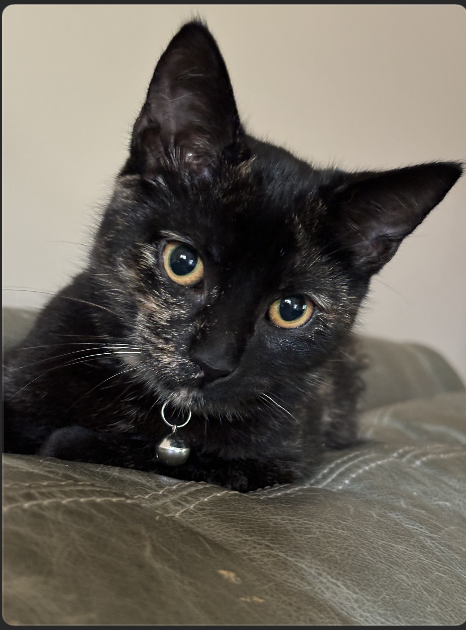

Zephyr
Zephyr is a tortoiseshell & domestic long hair mix kitten with a medium built. She is affectionate, curious, friendly, funny, gentle, loving, playful, and smart. She has a short coat. Her vaccinations are up to date, and she has been spayed / neutered.
Meet Zephyr
Zephyr, gentle as a warm breeze, is a shy wee girl with a sleek tortoise shell coat and beautiful dark golden eyes. Her foster mom says she is becoming braver everyday. She purrs with gentle pets and takes part in the rough and tumble play of her four litter mates. She will need a patient caregiver who lets her socialize at her own pace. She's already made great strides in foster care, learning to trust humans. Zephyr is 4 lb and roughly 4 months old at Halloween. She loves to watch the birds, lizards, chipmunks and squirrels outside the windows in the garden. With patience and support, her courage should build, watching her siblings accept humans and the loving care of her foster mom. She was part of a litter that was trapped as feral kittens and brought into foster in early October. She hasn't been tested around dogs or young children; she's still sensitive to sudden movements or loud noises.